Project (Sub)Tile
Wireframes
We went through several phases of wireframing over the course of the project.
Project (Sub)Tile
Wireframes
We went through several phases of wireframing over the course of the project.
First Phase: Sketches
For our first phase of wireframing, met briefly to discuss sections of the application, then split up sketching work to do separately. This approach resulted in the sketches below.
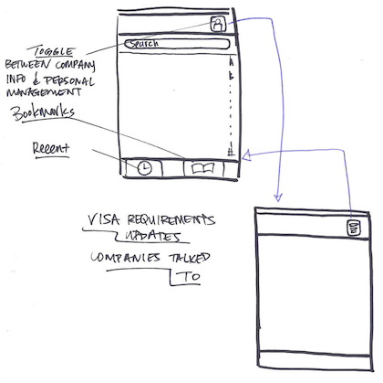 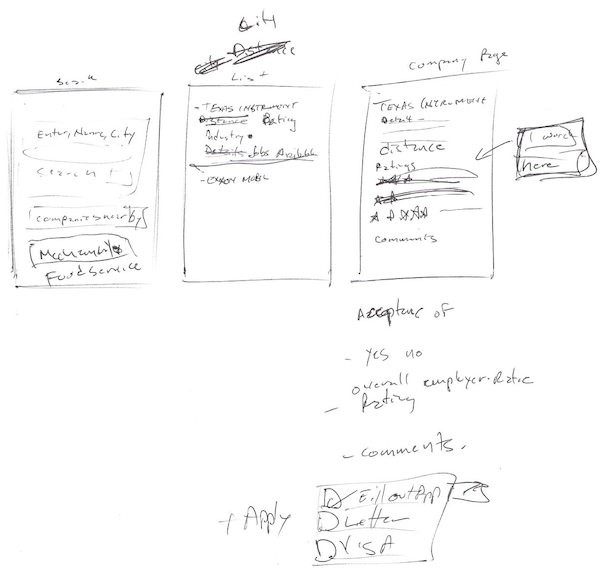 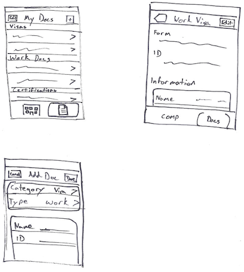 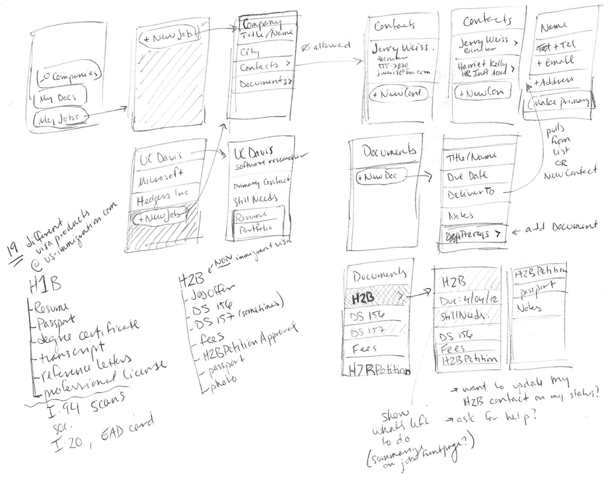 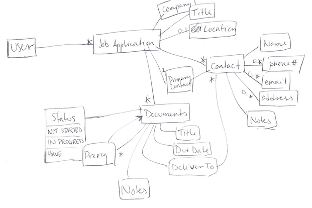Second Phase: Cacoo
The initial sketches were combined to form our first set of presentable wireframes and assembled using the online drawing tool Cacoo.
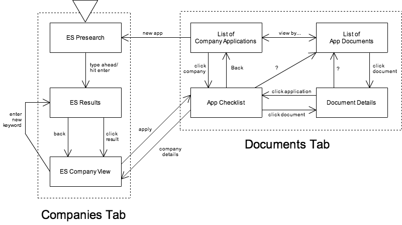 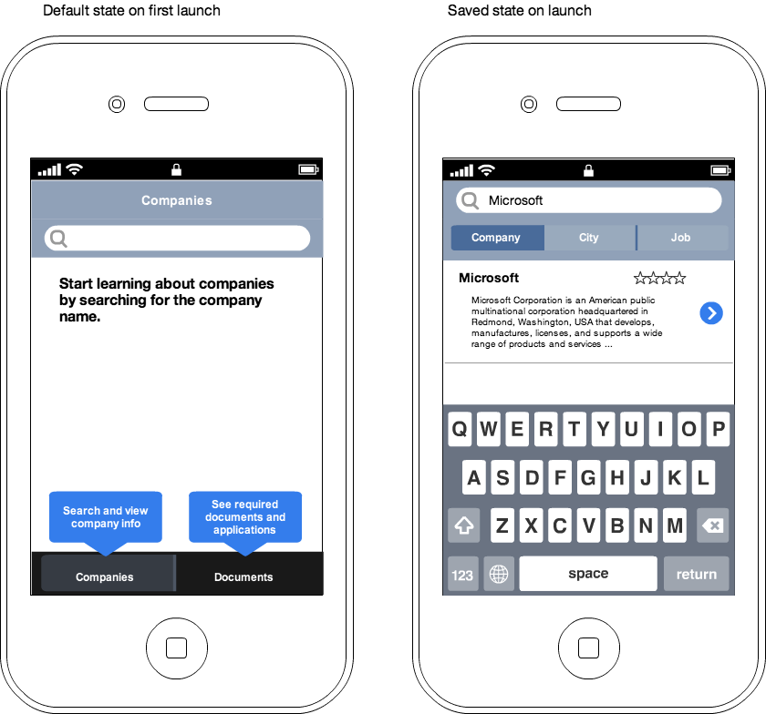 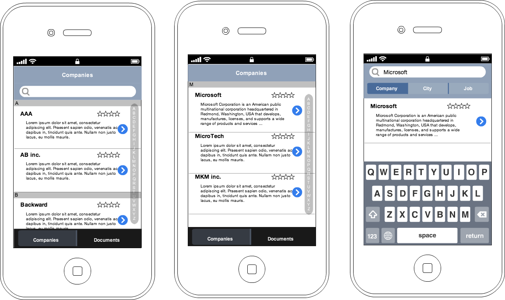 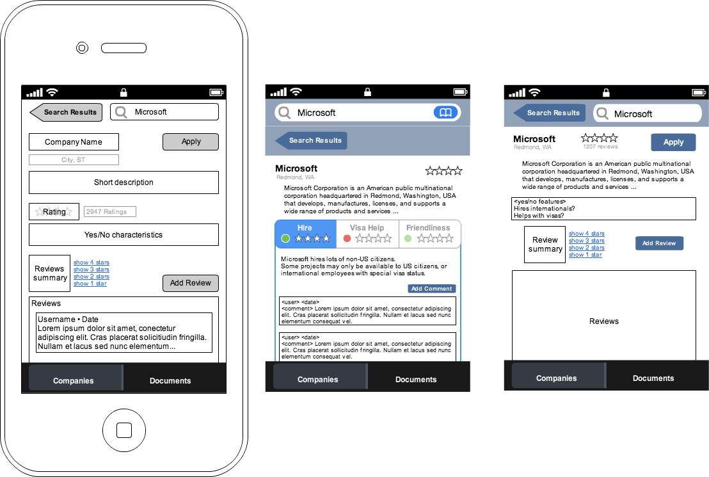 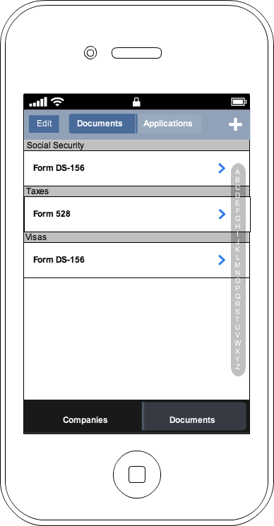 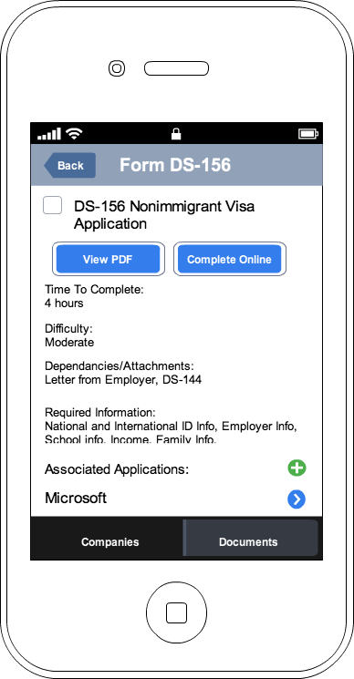 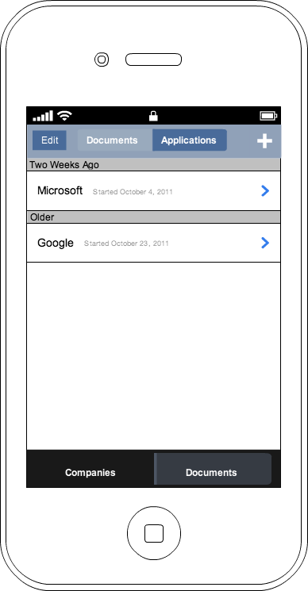 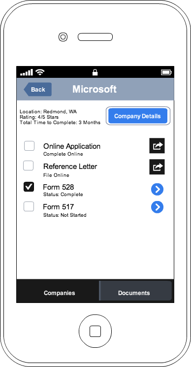Third Phase: Whiteboard
Our second phase of wireframing was done as a group, as a part of our affinity session revising the goals of our app.
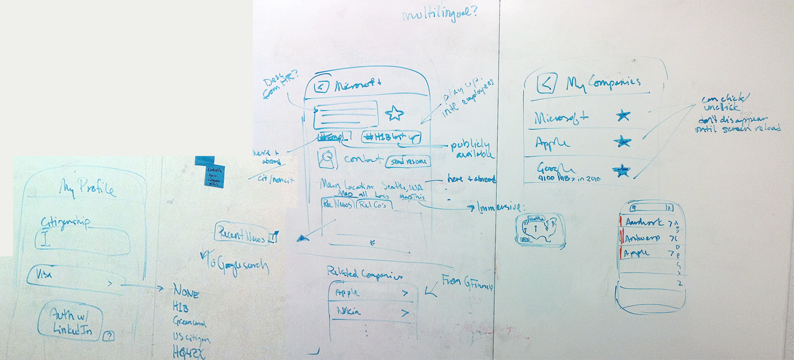Fourth Phase: Fireworks
Affinity diagramming gave us the focus to formulate our final screen design. See these in our live demo.